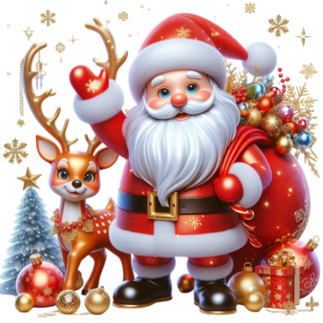

😂
😅
The unicorn is a legendary animal that looks like a horse or a goat with a single horn on its forehead. Unicorns are thought to be good and pure creatures with magical powers. They are strong, often white in color, and difficult to catch. The unicorn appears in the art of ancient Mesopotamia.
Christmas is a well-known festival and a very popular holiday season worldwide. The festival is celebrated during the last week of the year on December 25. It is believed that Jesus Christ was born on this day. The festival is on December 25, but the celebrations start earlier.Full Christmas Story. Joseph became very worried when he got to know that Mary was expecting a baby before their marriage. Then an angel appeared to Joseph in his dream and said not to be afraid and told him to have Mary as his wife. Angel further told him that Mary had been chosen by God to be the mother of his Son.
